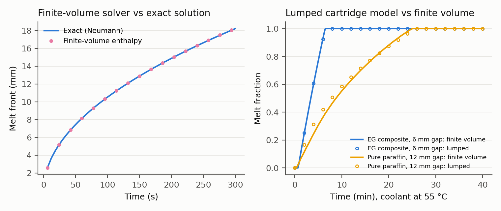
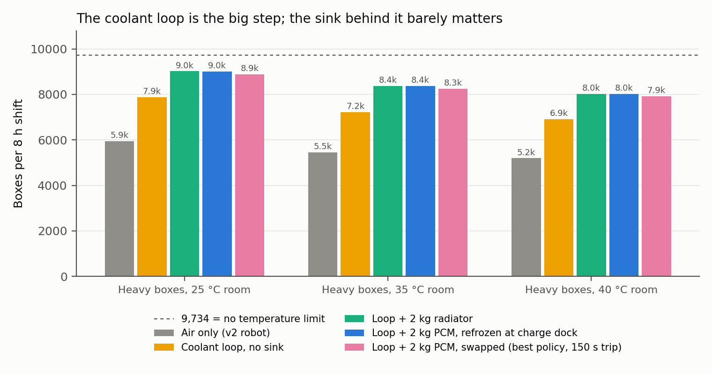
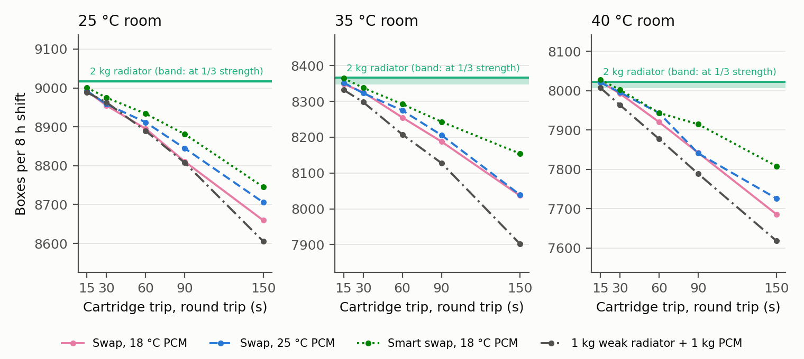
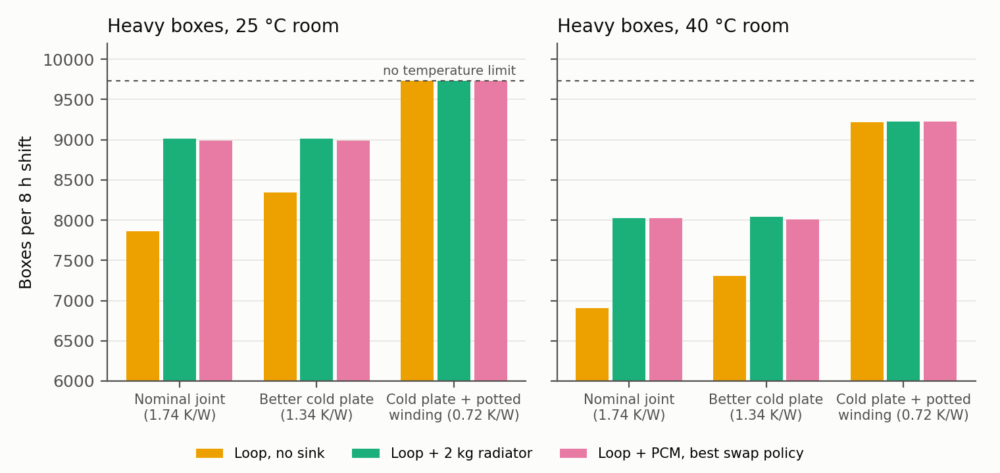

Preprint, October 2026
Humanoid robots now swap batteries in under three minutes. We ask whether they should swap heat too: carry a removable phase-change-material (PCM) cartridge that soaks up actuator heat and is exchanged for a frozen one at a dock, so that a thermal limit becomes a logistics problem. We extend a datasheet-validated thermal model of all 14 arm joints of the Apptronik Apollo humanoid with cold plates on the eight shoulder and elbow joints, a torso coolant loop, and four heat sinks: none, a radiator, a PCM block re-frozen in place at the charging dock, and a swappable PCM cartridge under three swap policies. The cartridge model is a lumped enthalpy method that matches a finite-volume solution to within 3% in time to 90% melt; the finite-volume solver matches the exact Neumann solution to 0.16%. Across 795 simulated 8-hour shifts of heavy box loading at 25, 35 and 40 °C, with battery logistics taken from published humanoid specifications, the swappable cartridge never beats a 2 kg radiator. A cartridge colder than the room does make the robot 3–5% faster while it works, but the trips to swap it cost more than that gain unless a round trip takes about 15 seconds, at which point it only ties the radiator. The result holds when the radiator is cut to a third of its nominal strength. The reason is where the heat path is narrow: once the loop exists, the winding-to-housing conduction inside each motor limits heat removal, not the sink. The coolant loop alone adds 32–33% throughput over air cooling; halving the winding-to-housing resistance, with no sink at all, lets the robot reach 100% of its no-temperature-limit throughput at 25 °C and 95% at 40 °C. For humanoid arms, cooling effort belongs inside the actuator. Code and data are open.
In long, repetitive lifting, a humanoid’s throughput is set by how fast heat leaves its joint motors. Our earlier study of the same robot found that a reactive switch between parallel single-arm lifts and two-arm lifts is the best way to manage that limit in software [12]. Software can only spend the thermal budget the hardware provides. This paper asks how the hardware budget should be raised.
Commercial humanoids already treat energy as a logistics problem. Boston Dynamics’ production Atlas swaps its own battery in under three minutes [13]; Agility’s Digit 5 runs 90 minutes and recharges in 9 [14]. A natural extension is to treat heat the same way: a removable cartridge of phase-change material absorbs actuator heat at near-constant temperature, and when it has melted the robot swaps it for a frozen one. The idea has close relatives but, as far as we could find, no direct precedent for robot actuators. A drone patent describes a battery pack with a built-in PCM heat sink that is re-cooled in the charger [15]; a review of wearable robotics proposes swappable PCM cartridges to cool the human wearer [16]; PCM buffers fixed inside actuators absorb short bursts [17]; and JSK’s Kengoro cools its skeleton by evaporating water [18].
We set out to find where swappable thermal capacity pays off and found that, for this robot, it does not. We report the full comparison, including the experiment designed to give the cartridge its best chance. The contributions are:
All results are in simulation. Section VII lists the limitations.
Thermal management of robot joints. Model-based thermal control of humanoid joints dates to Urata et al. [1], whose two-resistor winding/housing model we use. Later work limits joint torque from predicted or learned temperature models [3, 7], shifts posture to unload hot joints [2], switches contact modes so a hot limb can cool [4], and learns thermally aware policies [5]. These works manage a fixed thermal capacity. A review of robot thermal management [6] surveys the hardware side: forced air, liquid cooling and phase-change buffers.
Phase-change buffers. Paraffin composites with expanded graphite raise conductivity from about 0.2 to over 5 W/m·K [19] while keeping most of the latent heat of commercial grades such as Rubitherm RT44HC [20]. PCM heat sinks have been built into actuators to absorb transients and re-solidify during rest [17]. A UAV patent describes a battery assembly whose PCM heat sink is re-cooled by an active cooler in the charger [15]; we test the robot analogue (re-freezing at the charging dock) as one of our options.
Evaporative cooling. Kengoro sweats water through a porous skeleton and sustained push-ups far longer than with air alone [18]. We do not model evaporation; Section VII discusses it.
Battery logistics. Autonomous battery swapping is now standard on industrial humanoids [13]. Fast-charging designs instead dock briefly and often [14]. We use both cadences to schedule cartridge service.
Each arm joint is a Kollmorgen TBM(S)-6013-A frameless motor [10] driving a strain-wave gear, sized so peak motor torque matches Apollo’s published joint limits [9]. Its thermal state is a winding node \(T_w\) and a housing node \(T_h\), as in [12]:
\[C_w \dot T_w = P_{cu} - \frac{T_w - T_h}{R_{wh}}, \qquad C_h \dot T_h = \frac{T_w - T_h}{R_{wh}} - \frac{T_h - T_{amb}}{R_{ha}} - \frac{T_h - T_c}{R_{cp}}\]
Copper loss \(P_{cu}\) uses temperature-dependent resistance and torque constant. The model reproduces the datasheet’s rated temperature rise to within 1.1–4.9% for three motor sizes [12]. Nominal \(R_{wh}\) is 1.24 K/W. The last term is new: the eight plumbed joints (shoulder abduction, rotation and flexion, and elbow flexion, on both arms) have a liquid cold plate of resistance \(R_{cp}\) to the coolant at \(T_c\). Wrist joints keep air cooling only.
One well-mixed coolant node (0.5 kg of water-glycol) collects heat from the cold plates and rejects it to the active sinks:
\[C_c \dot T_c = \sum_j \frac{T_{h,j} - T_c}{R_{cp}} - UA_{rad}\,\max(T_c - T_{amb}, 0) - Q_{cart} - Q_{dock}\]
The radiator has a bypass valve, so it never heats a loop that is colder than the room. At a dock with chilled water, \(Q_{dock} = UA_{dock}(T_c - T_{chill})\). Table 1 lists every parameter and its source.
| Parameter | Value | Source |
|---|---|---|
| Cold plate, housing to coolant \(R_{cp}\) | 0.5 K/W (0.1 in Sec. VI-C) | Assumption, swept |
| Coolant inventory | 0.5 kg, 3,600 J/kg·K | Assumption / water-glycol |
| Radiator conductance | 15 W/K per kg (5 in Sec. VI-B) | Assumption, swept |
| PCM | RT44HC + 15 wt% expanded graphite | [19, 20] |
| Latent heat, conductivity | 187 kJ/kg, 5 W/m·K | [19, 20] |
| Cartridge PCM / aluminum fraction | 65% / 15% of packaged mass | Assumption |
| Cartridge heat exchanger \(UA_{hx}\) | 30 W/K per kg packaged | Assumption |
| Dock chilled water, coupling | 10 °C, 200 W/K | Assumption |
| Battery cadence | 90 min run, 9 min dock | Digit 5 [14] |
| Travel to dock, cartridge swap | 45 s each way, 60 s | Assumption, swept |
The cartridge is one enthalpy state \(H\) covering the PCM and the aluminum fins inside it. Temperature is piecewise linear in \(H\) through solid, a 3 K mushy zone carrying the latent heat, and liquid. Heat flows from the coolant through three series resistances:
\[Q_{cart} = \frac{T_c - T(H)}{1/UA_{hx} + R_{int} + R_{layer}(f)}, \qquad R_{layer} = \frac{\delta(f)}{k A_{fin}}\]
\(R_{int}\) is zero for a dry-break fluid coupling; a clamped contact pad would add 0.006–1 K/W depending on area and interface material [11]. The layer term models conduction through the melted layer (thickness \(f\,g/2\) while melting, where \(f\) is the melt fraction and \(g\) the fin gap) or the frozen layer (\((1-f)\,g/2\) while re-freezing). This is the quasi-steady Stefan approximation, appropriate here because the Stefan number is about 0.2. For melt temperatures other than RT44HC’s, we use a generic HC paraffin with the same latent heat and a 3 K melting range; a fresh cartridge is issued at 20 °C or 5 K below its solidus, whichever is colder.
Validation (Fig. 1). A one-dimensional finite-volume enthalpy solver across half a fin gap reproduces the exact Neumann melt-front solution to within 0.16%. Against that solver, the lumped model’s time to 90% melt is within 3% for the expanded-graphite composite (360 vs 350 s) and within 2% for pure paraffin in a 12 mm gap (1,270 vs 1,250 s), where layer conduction dominates. For the composite cartridge, the coolant-side heat exchanger, not the PCM, sets the melt rate.

The work policy is fixed for every option: the reactive switch from [12], which lifts two boxes in parallel until any winding reaches 130 °C, then lifts one box with both arms until it falls to 120 °C, and slows down above 135 °C. It was the strongest and most robust controller in that study. Only the cooling hardware and its service logistics change.
| Option | Hardware | Service |
|---|---|---|
| Air | None (the robot of [12]) | Battery only |
| Loop | Cold plates + loop, no sink | Battery only |
| Radiator | Loop + 2 kg radiator | Battery only |
| In-place | Loop + 2 kg fixed PCM | Chilled water through the loop during the 9 min battery dock |
| Co-swap | Loop + 2 kg cartridge | Swapped only during battery service |
| Swap | Loop + 2 kg cartridge | Extra trip whenever melt fraction reaches 0.95 |
| Smart swap | Loop + 2 kg cartridge | Swapped at battery service; extra trip only if the saturated stretch before the next battery service would cost more than the trip |
| Hybrid | Loop + 1 kg radiator + 1 kg cartridge | As smart swap |
The robot loads 8 kg boxes onto a high shelf, the heaviest scenario of [12], for an 8-hour shift with a battery service every 90 minutes. Joint torques come from MuJoCo inverse dynamics [8] along minimum-jerk trajectories with the held box as payload, cached per cycle as in [12]. A winding at 140 °C triggers a protective stop. If the robot never had to manage heat, always lifting in parallel would complete 9,734 boxes per shift with the same battery logistics; we report throughput against that ceiling.
Three sweeps ran on a laptop CPU:
Runs differ in the random box stream. No run in any sweep hit a protective stop, so all differences are in throughput. The run-to-run standard deviation was 14 boxes or fewer per configuration.

| Option | 25 °C | 35 °C | 40 °C |
|---|---|---|---|
| Air only | 5,940 | 5,458 | 5,193 |
| Loop, no sink | 7,867 | 7,225 | 6,909 |
| Loop + 2 kg radiator | 9,017 | 8,368 | 8,022 |
| Loop + 2 kg PCM, re-frozen at the dock | 8,999 | 8,362 | 8,027 |
| Loop + 2 kg PCM, swapped (best policy, 150 s trip) | 8,892 | 8,254 | 7,925 |
Cold plates and a loop with no sink at all add 32–33% over air cooling (Fig. 2, Table 3). They do it by spreading heat from the most-loaded shoulder joints into the housings of less-loaded joints, whose air paths then carry it away. Adding a radiator adds a further 15–16% and lifts the robot to 52–54% above air. In-place re-freezing at the charging dock matches the radiator to within 0.2%. The best swapping policy completes 1.2–1.4% fewer boxes than the radiator.
Melt temperature explains why swapping loses. A cartridge that melts at 18 °C is colder than every room tested, so while the robot works, it lifts in parallel more often: 1,273 boxes per working hour against the radiator’s 1,235 at 25 °C (+3%), and 1,151 against 1,099 at 40 °C (+5%). But it also melts faster, needing 10–15 extra trips per shift that cost 25–38 minutes of working time. The net is negative at every melt temperature.

| Room | Radiator | Radiator at 1/3 | Best swap, 15 s | 60 s | 150 s |
|---|---|---|---|---|---|
| 25 °C | 9,017 | 9,013 | 9,001 | 8,934 | 8,745 |
| 35 °C | 8,366 | 8,347 | 8,365 | 8,292 | 8,154 |
| 40 °C | 8,023 | 8,007 | 8,028 | 7,944 | 7,808 |
To give swapping its best case we let the round trip fall to 15 seconds, which would require a swap point at the work cell, and cut the radiator to a third of its nominal conductance, as if it were buried in a cramped torso with poor airflow. At 15 seconds the best swap policy ties the radiator to within 0.2% (Fig. 3, Table 4). Every longer trip loses. The weakened radiator loses at most 0.25% against the nominal one: a 2 kg radiator is oversized for this load, and at nominal strength its average heat rejection (about 100 W) leaves the coolant only about 3 K above the room.

| Room | Winding-to-coolant path | Loop, no sink | Radiator | Best swap | Of ceiling |
|---|---|---|---|---|---|
| 25 °C | Nominal, 1.74 K/W | 7,865 | 9,017 | 8,992 | 93% |
| 25 °C | Cold plate, 1.34 K/W | 8,341 | 9,017 | 8,986 | 93% |
| 25 °C | + potted winding, 0.72 K/W | 9,734 | 9,734 | 9,734 | 100% |
| 40 °C | Nominal, 1.74 K/W | 6,908 | 8,023 | 8,023 | 82% |
| 40 °C | Cold plate, 1.34 K/W | 7,310 | 8,044 | 8,009 | 83% |
| 40 °C | + potted winding, 0.72 K/W | 9,221 | 9,229 | 9,229 | 95% |
If the sink is not the limit, the joint must be. We cut the cold-plate resistance fivefold, then also halved the winding-to-housing resistance, as potting the winding or cooling the stator directly would. The better cold plate alone barely moves the radiator case (+0.3% at 40 °C), because the 1.24 K/W winding-to-housing resistance still dominates. Halving that resistance changes the picture (Fig. 4, Table 5). The loop with no sink at all reaches the no-temperature-limit ceiling at 25 °C and 95% of it at 40 °C, 15% more than the nominal joint with a radiator. A radiator or cartridge then adds at most 0.1%, and swapping with a 15 s trip still loses 0.4–0.9%.
What designers can take from this. For a humanoid doing heavy repetitive arm work, add liquid cold plates on the high-duty joints and a coolant loop, then spend the remaining effort reducing thermal resistance inside the motor: potted windings, stator-to-housing contact, or direct stator cooling. A small radiator is a cheap safety margin. Neither swappable nor dock-refrozen phase-change storage earned its complexity here.
When swapping could still pay. The swap’s working-time advantage comes from a sink colder than the room. It would win if a swap were nearly free (a 15 s exchange at the work cell, already a tie), or if the sink were truly the bottleneck: much higher heat loads than eight motors of this size produce, a sealed robot with no room for a radiator, or rooms well above 40 °C. Swapping a battery and cartridge as one pack [15] removes the extra trips, but its throughput is our co-swap option, which completed 1.3–2.2% fewer boxes than the radiator in the melt sweep.
Limitations.
We built and validated a model to test whether a humanoid should swap heat the way it swaps batteries. For heavy repetitive arm work on the Apollo humanoid, it should not: a swappable phase-change cartridge never beat a 2 kg radiator across 795 eight-hour shifts, rooms from 25 to 40 °C, melt points from 18 to 44 °C and swap trips down to 15 seconds. The coolant loop itself is worth 32–33% over air cooling, and the remaining limit sits inside the motor, between winding and housing. Halving that resistance let the robot run at its no-temperature-limit throughput at 25 °C with no heat sink at all. The code, parameters and all experiment data are available at https://github.com/sharanankathi/thermal-aware-humanoid-planner.